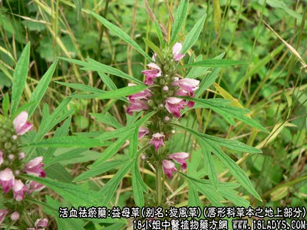
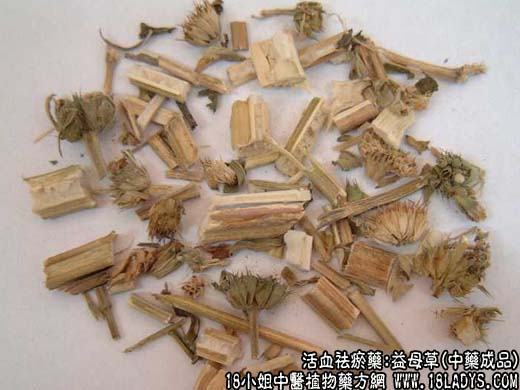

【中药概述】
益母草，别名：益母蒿、萑、野天麻、野油麻、猪麻、旋风草、鵻、蓷、辣母藤、土质汗、大札、小暑草、月母草、火炊、扒骨风、田芝麻棵、四棱草、苦草、郁臭苗、郁臭草、苦低草、油耙菜、坤草、细叶益母草、突厥益母草、地母草、茺蔚，为唇形科草本植物益母草的地上部分。辛，微苦，微寒。归心、肝、膀胱经。
1．活血调经：用于月经不调，痛经，经闭，恶露不净。如（益母草膏）、（<医学入门>益母丸）。
2．利水消肿：用于水肿尿少，急性肾炎水肿等。可与白茅根，车前草，黄芩等配伍。
3．凉血消疹：用于疹痒赤热，可单味应用，亦可配合凉血解毒、祛风止痒药同用。外用或内服。
【药物形态】
1.鲜益母草：幼苗期无茎，基生叶圆心形，5～9浅裂，每裂片有2～3钝齿。花前期茎呈方柱形，上部多分枝，四面凹下成纵沟，长30～60cm，直径O.2～O.5cm；表面青绿色；质鲜嫩，断面中部有髓。叶交互对生，有柄；叶片青绿色，质鲜嫩，揉之有汁；下部茎生叶掌状3裂，上部叶羽状深裂或浅裂成3片，裂片全缘或具少数锯齿。气微，味微苦。
2.干益母草：茎表面灰绿色或黄绿色；体轻，质韧，断面中部有髓。叶片灰绿色，多皱缩、破碎，易脱落。轮伞花序腋生，小花淡紫色，花萼筒状，花冠二唇形。切段者长约2cm。
【药效鉴别】益母草为妇科良药，功能与泽兰相近，配伍能增强活血祛瘀调经作用。益母草活血祛瘀之功较强，且能利水消肿。
【应用与配伍】
1．用于血滞经闭、痛经、经行不畅、产后瘀滞腹痛、恶露不尽等。本品苦泄辛散，主入血分，善于活血祛瘀调经，为妇科经产要药，故有益母之名。可单用熬膏服，如益母草流浸膏，益母草膏。亦常配当归、川芎、赤芍等，以加强活血调经之功，如《集验良方》益母丸。近代以本品配马齿克治妇科产后出血有较好疗效。
2．用于水肿，小便不利。本品有利尿消肿之功。又因其具有活血化瘀作用，对水瘀互阻的水肿尤为适宜。可单用，亦可与白茅根、泽兰等同用。近代用治肾炎有效。
此外，本品又可用于跌打损伤、疮痈肿毒、皮肤痒疹等，有清热解毒消肿之功，近代报道用治心血管疾病如冠心病等有效。
【药理作用】
1．对子宫的作用：益母草煎剂、乙醇浸膏及益母草碱对兔、猫等多种动物的离体子宫有兴奋作用。
2．对心血管的作用：益母草对离体豚鼠心脏，用异丙肾上腺素造成心肌缺血模型，能显著增加冠脉流量及相当显著地减慢心率。静注益母草制剂使麻醉犬明显增加冠脉流量，降低冠脉阻力，减慢心率及减少输出量和左心室作功的作用。
3．抗血小板聚集及抗血栓形成：体外实验证明，益母草及其提取物有拮抗ADP诱导的正常动物血小板聚集作用。体内实验亦证明益母草能显著减少外周循环中的血小板总数和肺泡壁毛细血管内血小板及其聚集物。益母草对兔肺循环红色血栓有显著溶解作用。
此外，益母草还有增强机体的细胞免疫等作用。
【化学成分】含生物碱：益母草碱、小苏碱、益母草定。此外，含芸香甙和延胡索酸。
【用量用法】6——18g，水煎服，或入剂。外用适量。
【使用注意】孕妇忌服，血虚无瘀者慎用。